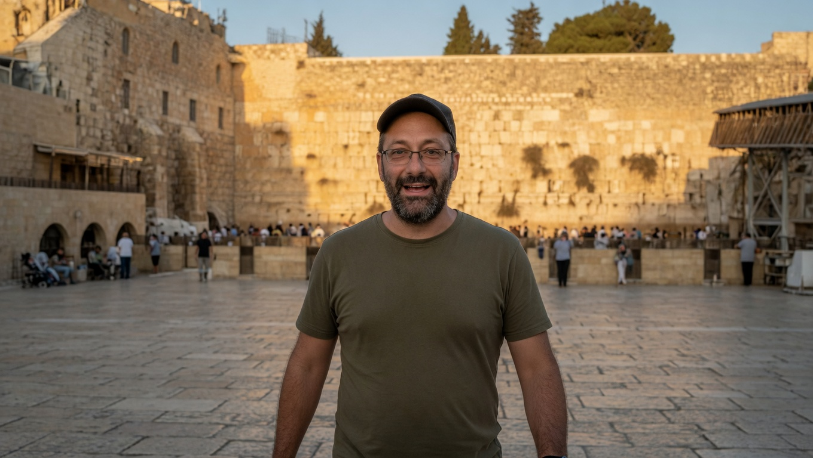
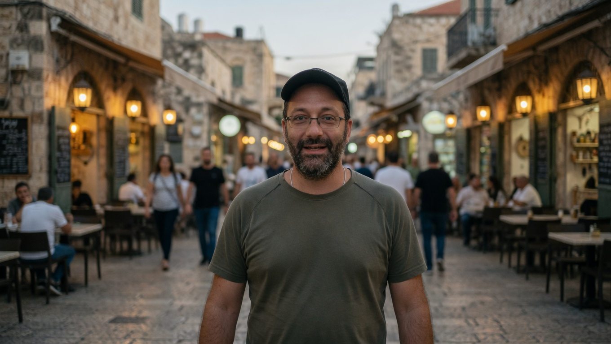
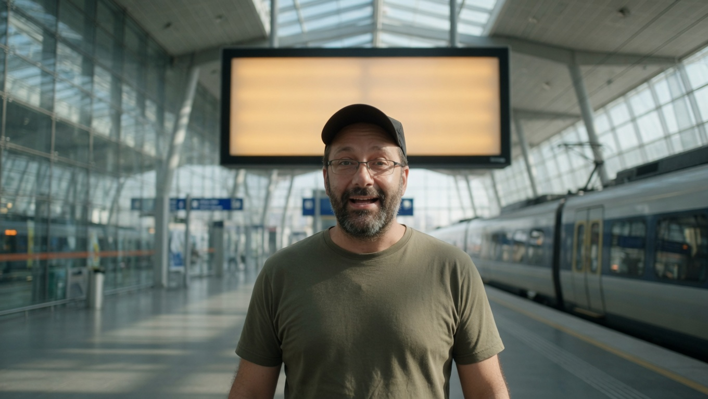
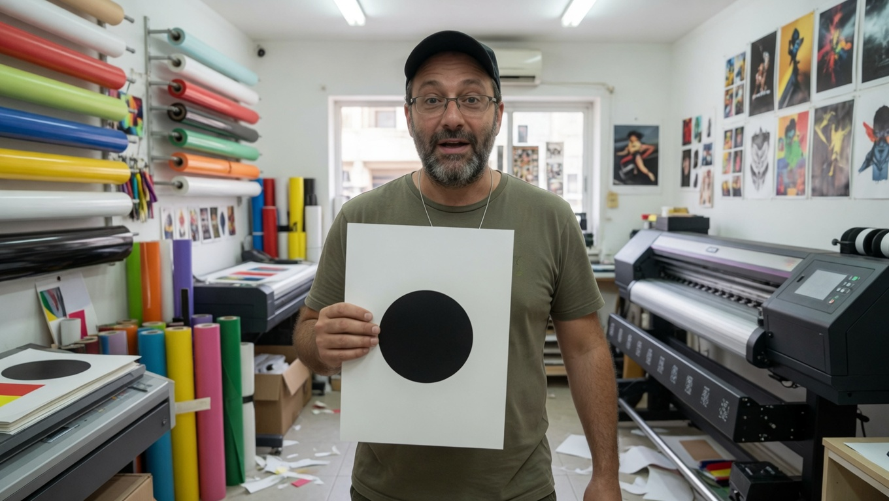
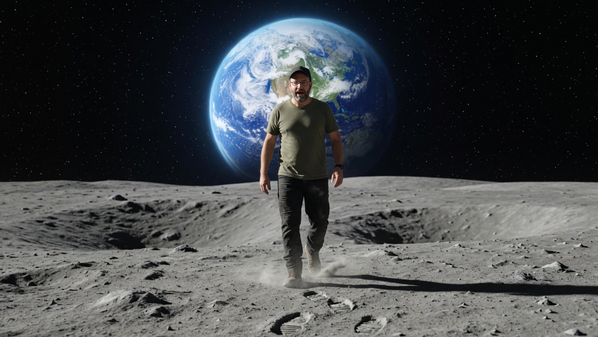

חמש פגישות, הליכה אחת.
מיכל, ג׳מה, והחנות בבת ים. דוד הולך ישר. המקומות מתחלפים. בסוף, לכל אחת פרויקט משלה. הבית של נקודה: nekuda.co.il.

הכותל

בן יהודה

התחנה, לוח ריק

בת ים, עיגול שחור

הירח, בלי חליפה
חמש השורות למטה הן משפטי הקורס. הן לא תמלול של הפסקול.
פגישה א כשעתיים וחצי · הכותל
אני דוד מירושלים. עם מעט ידע, תפילה ואמונה, בניתי בית של כלים. היום: מהי בינה, ג׳מיני, קלוד וגרוק.
- 0:00 מה שכבר עובד בחנות — 20 דקות
- 0:20 מהי בינה, בלי מיתוס — 20 דקות
- 0:40 ג׳מיני: שיחה, תמונה, ופלואו — 30 דקות
- 1:10 קלוד וקלוד קוד: קוד, חפצים, אוטומציות — 25 דקות
- 1:35 הצצה קצרה לאנטיגרביטי — 10 דקות
- 1:45 גרוק, עובד מהיר, וגרוק בוט — 20 דקות
- 2:05 תרגיל: הצעה אמיתית ללקוח, מתוקנת ביד — 25 דקות
פגישה ב כשעתיים וחצי · בן יהודה · בלי קוד
בבן יהודה נכנסים לפלואו, בלי קוד. כל אחת בונה מוקאפ לאתר שלה, וארבעה סרטונים קצרים.
- 0:00 מה שכבר נראה טוב, בלי קוד
- 0:15 פלואו עמוק יותר, אותו פנים
- 0:55 תבנית מוקאפ: נייר, דיו, הסימן הכתום
- 1:25 כל אחת בונה את המוקאפ שלה
- 2:05 ארבעה סרטונים קצרים
- 2:45 עברית נצרבת אחר כך, לא בתוך המודל
פגישה ג ארוכה · התחנה
בתחנה מחברים הכול: אתר אמיתי, רשתות, מסמכים אוטומטיים, וסדר על המחשב. אתן מאשרות כל מה שיוצא.
- 0:00 ממוקאפ לאתר אמיתי
- 0:40 חיבור הרשתות שכבר בשימוש
- 1:10 מסמך שנוצר, ואז נקרא ביד
- 1:45 פוסט רק אחרי שאישרתן
- 2:10 סדר על המחשב
פגישה ד מתקדמת · בית הדפוס
בבת ים, בבית הדפוס, אני מחזיק דף של נקודה. מכאן: סרט, דפדפן שעובד, וחיפוש לקוחות עם קלוד.
- 0:00 סרט מתמונה נעולה, אותו אדם
- 0:40 דפדפן שעובד לבד, בלי לגעת בחלון של מישהו אחר
- 1:15 חיפוש לקוחות עם קלוד קוד
- 1:55 דף הגהה ביד: עיגול שחור. הסימן הכתום נשאר בקובץ
- 2:15 סודות נשארים במחזיק המפתחות
פגישה ה מקצה לקצה · הירח
על הירח הולכים עד הסוף. מכונה שמשתפרת לבד, ובוחרת ערוץ יוטיוב אחד. יצאתן לדרך.
- 0:00 פרויקט אחד לכל אחת
- 0:20 מקלידות צפיות ומנויים. המכונה מחשבת. הגבוה מנצח
- 1:00 ערוץ אחד, לא חמישה
- 1:20 מה לשפר בשבוע הבא, ביד. המכונה לא שולחת
- 1:50 איך להגיע לדוד
- 2:05 התרגיל שעל הגיליון למטה
- עברית על תמונה נצרבת אחר כך. המודל שובר אותיות.
- אדם קורא לפני שכל דבר יוצא.
- בלי וואטסאפ קר.
- סודות נשארים במחזיק המפתחות.